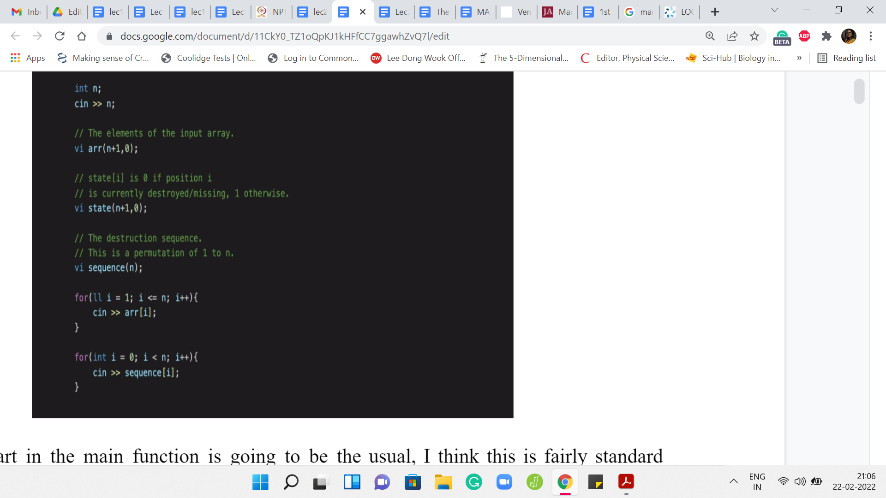
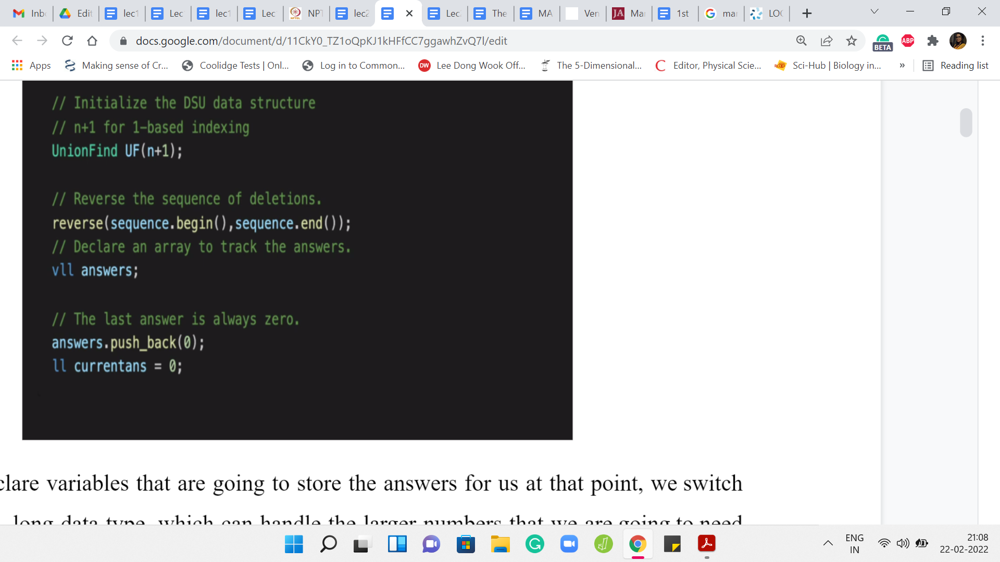

M 2 (Destroying Array-II)
Lecture - 20
Disjoint Set Union - Module 2 (Destroying Array-II)
(Refer Slide Time 00:11)

Welcome back to the second segment of the Destroying Array module. Remember that in this part we only discussed the implementation. This will make a lot more sense if you watched the previous part first. If you have not done that, please go back and take a look at that video where we actually go over the problem statement, the main ideas for a solution and it is that solution that we are going to try and implement now.
Let us get started here. As usual, you can find a link to the problem itself in the description of this video. You may want to cross-refer that to make sure that the input-output formats are as you expect, and so on.
(Refer Slide Time: 00:50)

The first part of the main function is going to be the usual. I think this is a fairly standard parsing of the input. We are going to first take in the number of elements in the array, and then we are going to store the elements of the array in a vector of integers. We are also going to have a state vector, which tells us which locations are currently occupied and which locations are currently empty.
The state vector will evolve as we go through the process of adding elements to the array one by one. Then we declare, again, the vector of integers to take in the sequence in which the destruction happens. We just take in all of these inputs. Let me just also point out the limits. I believe the value of ‘n’ ranges from 1 to 100,000. The values of the elements in the array would range between 1 and 109.
All of this would fit within the integer data type and that is why everything that you see here has been declared as an integer, except for the index variable in the first for loop, which I think is just really not intentional. So that could very easily also be an integer. That is not really going to be a problem. But remember that we are tracking the sums of elements of segments in this array. When you add up these large numbers, then you might overshoot what can be stored in an integer data type.
(Refer Slide Time: 02:25)

When we declare variables that are going to store the answers for us, at that point, we switch over to the long, long data type, which can handle the larger numbers that we are going to need as we go along. After taking in all of the input, we instantiate the disjoint set union data structure. Again, I do this with ‘n+1’ elements so that I can simply talk about the ’i’th element without having to adjust for indexing to go back and forth between zero-based and one-based indexing. You might have a different taste with regards to this.
But if you do it differently in the sense that you initialize it with ‘n’ elements, then please remember to adjust your indices properly because the input sequence is a permutation of 1 to ‘n.’ So you will have to roll it back by 1 if your elements are ranging from 0 to ‘n-1.’ The first thing that we do is to reverse the sequence of instructions.
We are going to declare a vector of long, long integers to store the answers that we are supposed to output at the end. We are going to use the variable current answer (currentans) to keep track of the answer in the current stage of the process.
(Refer Slide Time: 03:38)

Let us move to what is really the heart of the whole algorithm. This is where we actually go through the process. We are going to go over the sequence. Then we are going to do the union operations based on the situations that we have already discussed in the previous video. First of all, when we say that the ’x’th element is now being added, we modify the state of the ’x’th location to 1, to indicate that this location is now occupied.
Now we create the singleton set that is associated with this location. Normally makeSet will just take one parameter as input, and it will say: I want to create the singleton set involving the ’i’th element and that would have been enough. But remember that we are tracking the sums of the elements, the actual numbers that are sitting at these locations. So we are going to use the indices to keep track of how the sets are evolving.
But we also need to keep track of the numbers that are involved at these locations. I am also passing that as a parameter and it is going to be used to initialize the value of sumSet, the sum of the elements in the set. We are going to store that in a separate array. For the singleton set, that is just going to be the value of the array of x. It is going to be that number. We pass that in as a parameter as well so that we can track this value.
We need to look at whether the introduction of the element at the ‘x’th location is causing any merges or any extensions of previously existing sets. That is exactly what we are doing here. We are checking if the left neighbor is non-empty. If yes, then we take a union between ’x-1’ and x. If the right neighbor is non-empty, then we take a union between x and ‘x+1.’ This non-emptiness is essentially checked by the value in the state array.
Notice that the first part of that ‘if’ clause is just safeguarding us from falling off the cliff, so to speak. That accounts for the edge cases that I was mentioning briefly in the previous video. If ‘x’ is zero, then ‘x-1’ will not make sense and if ‘x’ is ‘n’ then ‘x+1’ will not make sense. That is essentially what we are trying to be careful about here. Now that we have done the merging, let us think about what should be the value of the answer at this stage. Remember that we want to return the weight of the heaviest chunk.
We know the weight of the heaviest chunk from the situation when this element had not yet come into the picture. We know the heaviest chunk from the previous iteration in the sequence. If we are just at the beginning, then the current answer is initialized to 0 and we really have nothing to check. We just output the value of the singleton chunk that got introduced. Just as a sanity check, that is what happens at the very first step.
But in a general iteration, the value of the variable current answer gives us information about the heaviest chunk in the previous snapshot. Now there was this one element that came in, and it potentially merged some sets, or it potentially manifested as a singleton set. But essentially, the only new contender is going to be the set that this new element belongs to. All other sets pretty much remain the same. They have the same weight as the previous step.
Some sets disappeared. Notice that if one of the sets that disappeared was actually the champion set from the previous iteration, then it is going to at least retain that status when, you know, it gets merged with the new element. The only reason a set disappears from the previous snapshot is that the set got enhanced with the new element that was added. It got merged with 1 or 2 sets depending on the situation that you are in.
Notice that the value of the set, the weight of the set only gets better because all of the numbers in the array are non-negative. So we do not have to worry about if we lost this set. Maybe the maximum is the crown now needs to shift to one of the other sets. We need to look through all of the other sets and check if one of them got better.
Notice that if the newly introduced element could have been potentially a large negative value, then this would have been a problem. After this merger, maybe there was a set that was doing very well and was championing the previous round and now it just became much worse and we need to find a new champion. But notice that this is something we do not need to worry about at all because all the elements have non-negative values. When you bring them in, the previous sets, if at all, get better.
All that we need to do is check if the new set that came into the picture, which could either be a singleton or it could be the merger of some sets from the previous iteration. We just need to sanity-check the weight of this set against the best value that we had from the previous iteration. So the weight of this newly created set dominates the current answer. Then we need to update the value of the current answer otherwise we leave the current answer as it was.
That is essentially what is happening in the penultimate line of this code snippet. After this, we basically just do the formalities. The logistics would be to push the value of the current answer into our answers array so that we are tracking the answers at every iteration.
(Refer Slide Time: 09:38)

Once you have gone through the whole process, we need to shave off the last answer that we add to the answers array. The reason for that is, at the very end when you add the last element to the array, you have reconstructed the whole array. The answer that you get at that point is going to be the sum of all the elements in the array. There is just one junk. Your output only starts from the heaviest chunks after the first element has been removed.
The last thing that you add to the answers array is not really relevant. We want to get rid of it. That is the pop operation that you see here. After this, your answers array is ready for output. Do remember to reverse the answers array because we have been collecting the answers in the opposite order of what actually transpired.
We need to reverse this back so that the output is consistent with what is expected. At this point, we are pretty much done. Let me just quickly recap a couple of small changes that we needed to make to the union-find class. I will not recap the whole class because that is been described in some detail in the previous module. Do check that out if you have not already.
(Refer Slide Time: 10:55)

One function that we did need to add here was the makeSet operation. Even before this, I will mention that you have to adjust your initializations a little bit. In the previous constructor, the whole thing was set up to capture the state of ‘n’ singleton sets. We wanted every element to be its own set. What we do instead is lay the groundwork. We create enough room for ‘n’ sets to be or ‘n’ elements to be eventually added. But initially, all the sets are empty.
All the parent pointers that point to -1, it is some value to say that these are not yet defined. The depths of the trees are also -1 just to say that these trees do not exist, and things like that. So we made some adjustments to how the constructor works and makeSet is what captures the creation of singleton sets as they come along. There are multiple ways in which you could do this. I chose this because it felt natural to me in terms of just being reflective of the process as we described it.
But I am sure there are other equally valid implementation strategies. Although I am not showing you the modified constructor here, you can find the entire code as usual in the official repository. Let us just quickly look at what is happening in makeSet. When you are creating the ’i’th element – as usual, the ’i’th element at this point is a singleton set is its own leader. The parent simply points to itself. This is a tree, which has just one root.
So by convention, its depth or rank is going to be 0. It is a set whose size is just 1. It is a singleton element. When we create a new set, we increase the number of sets. We increment the numSets variable accordingly. Notice that the extra thing that we are tracking in this problem is the sum of the elements in any given set. The sumSet array at the location ‘i’ needs to be updated so that it has the value of the element in the array that we were working with.
Remember, we passed this as a parameter, that is the second parameter here. SumSet of ‘i’ is initialized to ‘x.’ One thing that I am not showing you that is actually quite important is that when you are doing the union operation, you do need to update sumSet there as well. So sumSet of y will become sumSet of y plus sumSet of x. Basically, you want to bring in the sum of all the elements that were there in the set being tracked by x to now the largest set that is being tracked by y.
This is very similar to the updates that we did for tracking the minimum element, the maximum element, the number of elements in the sets, the sizes of the individual sets, and things like that. It is very much in that spirit. I hope that you will be able to work through this yourself and just in case you need to cross-check, or you need to refer to it, the entire code is available in the GitHub repository.
You are welcome to take a look at that as well. So with that, we come to an end of the description of how we would solve Destroying Array. I hope you enjoyed this. Let me know what you think in the comments or keep the conversation going on Discord. I look forward to seeing you there. We will be discussing one more problem this week. So I will also see you in the next video. Thanks for watching and bye for now!